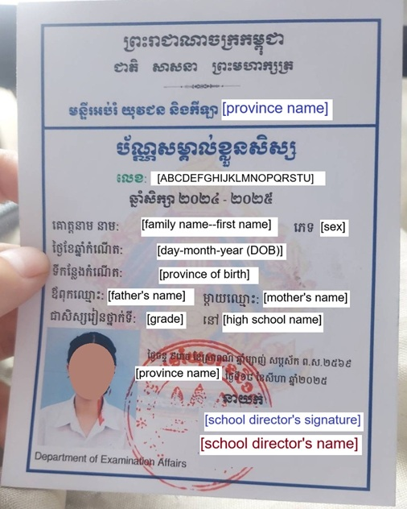
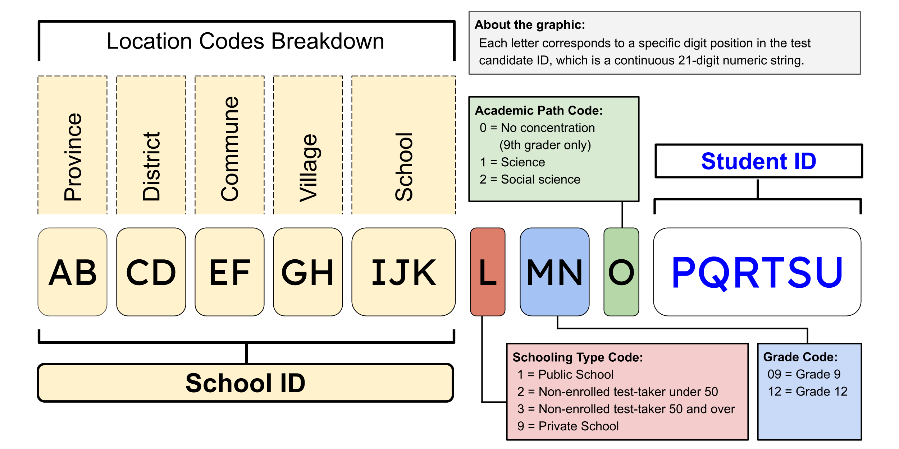
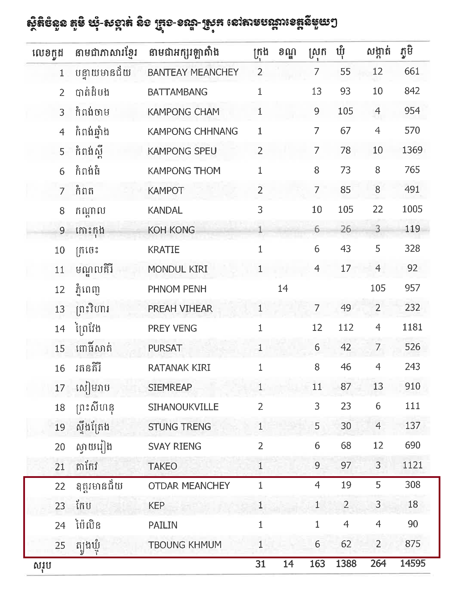

A Quest to Learn About Cambodia's 21-Digit BAC II ID Numbers
Sythong RunTL:DR: I was intrigued by Cambodia's test candidate ID system, so I investigated and learned that the 21-digit numeric string contains the following information: the student's school code, the type of school they attend, their grade level, their academic route, and their unique student ID.
How my quest began
In mid-August, my younger sister sent me a photo of her Baccalauréat de la deuxième Partie (BAC II) test candidate identification (ID) card. The BAC II is the second diploma test a high school student in Cambodia must take if they wish to graduate. The first test is completed in grade 9 and the second in grade 12. The test lasts two days and would mark a students last days in high school. Sending her card to me was her way of telling me she felt ready and anxious about the coming days. Many students also take to social media platforms such as TikTok and Facebook to share their nervous excitement. What struck me was how long her test candidate ID was: a 21-digit numeric string with no spaces or dashes between them.

You may have noticed that the full word for BAC II has its roots in French. If you did not realize that Cambodia was a French colony, now you do; the country was under French rule for nearly a century. I would start talking about the size of the French embassy in Cambodia and the park they have, but this is not the post for that. Back to the BAC II.
With a quick probability calculation (1021), I learned that the 21-digit string would allow for a sextillion combinations of numbers; that's a 1 followed by 21 zeros! I had to look up what a number with 21 zeros is called. That's far more unique identifiers than needed for everyone on Earth, let alone Cambodia. To put this in another perspective, with the estimated number of stars in our galaxy being between 100 billion and 400 billion, a sextillion is 2.5 to 10 billion times larger than this number. Using the BAC II system, even if we assigned IDs to every person on Earth and every star we've identified, we still wouldn't run out. So, I wondered, what's behind the numbers of a BAC II ID?
The investigation
I started my investigation by collecting sample BAC IDs from Facebook and TikTok. I gathered IDs from both 9th and 12th grade students and recorded information I thought might offer some clues: their BAC ID numbers, birth province, testing province, gender, and grade level. This data would help me test different theories about what each digit might represent.
Before diving deeper, I needed to understand how the BAC system actually works. I texted my sister with questions and searched for articles online. I wanted to identify specific hypotheses to test. For example, does the code indicate which foreign language a student chooses? Does it show whether they're on a science or social science track? My sister seemed puzzled by my sudden interest in the BAC system, but I kept my investigation secret for now.
For a quick background, 9th and 12th grader are tested on various subjects. While 9th grader don’t need to pick their concentration, 12th graders must pick between two paths: social science (focused on theoretical knowledge) or science (focused on logic and reasoning). Both routes test students on seven subjects.
Science route students are tested on:
- Biology
- Chemistry
- Foreign language
- Khmer literature
- Physics
- Mathematics
- One subject chosen by the Ministry of Education, Youth and Sport (MoEYS) each year, either Geography, History, Moral and Civic Education, or Earth and Environmental Sciences For the 2025 exam, History was selected.
Social science route students are tested on:
- History
- Geography
- Foreign language
- Mathematics
- Moral and Civic Education
- Khmer literature
- One subject chosen by MoEYS each year, either Physics, Chemistry, Biology, or Earth and Environmental Sciences. For the 2025 exam, History was selected.
I spent hours researching. I combed through news articles, explored school databases on Open Development Cambodia and reviewed documents from the MoEYS. I also found provincial coding data from the Ministry of Economy and Finance.
What I learned
After all this research, I believe I've cracked the code. The graphic below summarizes what I think each part of the BAC ID represents.

Let’s dive into the code. The first 11 digits refer to the school's location:
- Digits 1-2 refer to the province
- Digits 3-4 refer to the district
- Digits 5-6 refer to the commune
- Digits 7-8 refer to the village
- Digits 9-11 refer to the school
The 12th digit, represented by the letter "L," refers to the schooling type. For this code, I am confident that the number 1 refers to a public school and 9 refers to a private school. This was verified by cross-referencing school codes in files provided by MoEYS with the school stamps on testers' IDs. All public schools use the same government stamp, whereas private schools have their own unique stamps. The assignments of numbers 2 and 3, however, are conclusions based on two limited observations. Firstly instead of a high school name being listed on the student’s card, the city of residence was listed. Secondly their high school code appeared as 1 followed by ten 0’s. Based on news articles about older BAC II candidates and reading birthdates on the IDs I found online, it appears that 2 refers to non-enrolled test-takers under 50 (the data I have are of test-taker in their mid-20s), while 3 refers to non-enrolled test-takers over 50.
The 13th and 14th digits, represented by letters "M" and "N," indicate the student's grade level—09 is used for the 9th grade diploma and 12 is used for the 12th grade BAC II.
The 15th digit, represented by letter "O," tells us about the student's academic path. The assignment of 0 means the student has no concentration, which applies only to 9th graders who are not required to select a route. The assignment of 1 means a student picked the science path, and 2 means social science. This was confirmed by asking my sister about her path and cross-checking with the recent trend where more students pick the social science path. This is also reflected in my data, where most IDs were assigned the number 2 in the 15th digit.
Finally, the last six digits, digits 16 through 21, are the student's unique identifier. From this breakdown, we learned that the BAC II candidate code contains the following information: the student's school location, the type of school they attend, their grade level, their academic route, and their unique student ID. Now let’s talk about another quest I found through this investigation, I hope some of you can help me.
Other Quest that Arise From This
Through examining school codes, I noticed that the two-digit province codes generally align with the alphabetical order of the English spellings of province names. Using the Gazetteer of Cambodia 2023 report, I discovered that every province follows this pattern except for the last four: Oddar Meanchey, Kep, Pailin, and Tbong Khmum (see image below).
At first, I thought the break in alphabetical order was related to when each province was created. Tbong Khmum, for example, was the most recently created province, established in 2014 when it split from Kampong Cham. So it made sense that Tbong Khmum would break the alphabetical order and take the next available code, 25.
However, looking at Oddar Meanchey, Kep, and Pailin puzzled me. Oddar Meanchey was created in 1964 and re-established in 1995. Kep and Pailin cities were both re-classified as provinces in 2008. From a presentation by Cambodian officials I found, it appears that the Gazetteer of Cambodia was established years after Oddar Meanchey became a province—so why doesn't it follow the alphabetical pattern?
Moreover, Kep has been assigned code 23 since November 17, 2000, before it was reclassified as a province—why did it not follow the alphabetical pattern then? You might think it didn't follow the pattern because it wasn't a province at the time. However, Sihanoukville was also a city that was reclassified as a province in 2008, but it followed the alphabetical pattern in 2000—so why the inconsistency? If anyone has thoughts on this, please let me know.
